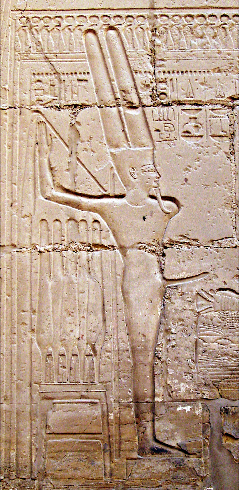

Infami Monumenti Timeline
Paleothic Times

Khalid Nabi Cemetery
XX Century B.C.

Al-Masala Obelisk
XIX century B.C.

Min at Karnak Temple
II century B.C.

Statue of Priapus in Ephesus
II century B.C.

Poenulus ("The Little Carthaginian")
I Century A.D.

Fresco of Priapus, House of Vetti
I Century A.D.

Head of Priapus
I Century A.D.

Fresco of Priapus Regio V
I century A.D.

Tintinnabulum
I Century A.D.

Venus in a Gold Bikini
II century A.D.

Epigram of a Fascinus
Middle Ages

Phallic Saints
XIV century A.D.

Boccaccio, Carmina Priapea
XVI Century A.D.

Lysistrata
XIX Century A.D.

Two Lovers in front of the hermes of Priapus
XIX century A.D.

Ypsilanti Water Tower
XXI century A.D.

Torre Glòries